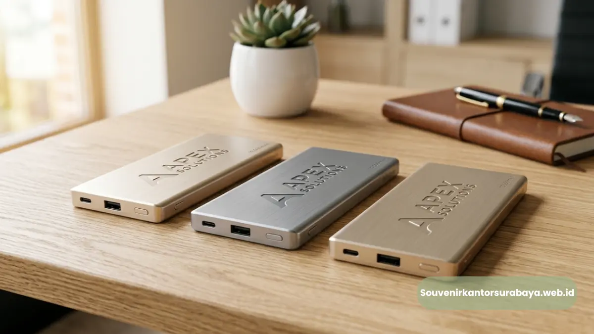

Powerbank slim fast charging custom logo sebagai pilihan souvenir kantor premium dan fungsional di Surabaya.
- Apa Itu Powerbank Slim Fast Charging untuk Souvenir Kantor?
- Mengapa Powerbank Dipilih Sebagai Souvenir Kantor?
- Bagaimana Cara Kerja Fast Charging pada Powerbank Slim?
- Apa Saja Faktor yang Mempengaruhi Kecepatan Pengisian?
- Faktor Penting Sebelum Memesan Powerbank Custom Logo Perusahaan
- Kesalahan Umum Saat Memilih Powerbank Souvenir Kantor
- Tips Memaksimalkan Powerbank Slim Fast Charging sebagai Media Branding
- Powerbank Slim Fast Charging vs Souvenir Kantor Konvensional
Powerbank slim fast charging adalah pilihan souvenir kantor paling relevan bagi perusahaan di Surabaya yang ingin memberi hadiah fungsional, ringkas, dan bernilai branding tinggi. Sebagai vendor powerbank slim fast charging perusahaan Surabaya, souvenirkantorsurabaya.web.id menyediakan produk custom logo dengan proses pemesanan cepat dan hasil siap pakai untuk kebutuhan korporat.
- Powerbank slim fast charging cocok untuk souvenir karyawan, klien, dan mitra bisnis.
- Desain tipis dan ringan memudahkan penggunaan sehari-hari sehingga branding perusahaan lebih sering terlihat.
- Fast charging menjadi nilai tambah dibanding powerbank konvensional yang pengisian dayanya lebih lambat.
- Custom logo dapat dilakukan melalui cetak, UV printing, atau laser engraving sesuai kebutuhan perusahaan.
- Pemesanan dalam jumlah besar dapat disesuaikan dengan anggaran dan linimasa acara korporat di Surabaya.
Apa Itu Powerbank Slim Fast Charging untuk Souvenir Kantor?
Powerbank slim fast charging adalah perangkat pengisi daya portabel berbodi tipis yang mendukung kecepatan pengisian lebih tinggi dibanding powerbank standar.
Untuk kebutuhan souvenir kantor, bentuknya yang ramping membuat produk ini mudah dibawa dalam tas kerja maupun saku, sehingga logo perusahaan yang tercetak pada bodinya berpotensi terlihat berulang kali oleh penerima maupun orang di sekitarnya.
Dalam konteks souvenir korporat, powerbank tergolong kategori gadget promosi yang dianggap lebih berkesan dibanding alat tulis konvensional.
Mengapa Powerbank Dipilih Sebagai Souvenir Kantor?
Powerbank dipilih sebagai souvenir kantor karena kebutuhan pengisian daya perangkat mobile kini menjadi bagian dari rutinitas kerja harian. Karyawan, klien, maupun peserta acara korporat umumnya membutuhkan sumber daya cadangan saat mobilitas tinggi, terutama pada acara seminar, gathering, atau perjalanan dinas.
Selain aspek fungsional, powerbank slim fast charging juga memberi kesan bahwa perusahaan pemberi souvenir memperhatikan detail kepraktisan dan mengikuti perkembangan teknologi. Hal ini secara tidak langsung turut membentuk citra perusahaan sebagai entitas yang modern dan solutif di mata karyawan maupun mitra bisnis.
Baca Juga
Bagaimana Cara Kerja Fast Charging pada Powerbank Slim?

Powerbank custom logo perusahaan Surabaya dengan desain slim dan teknologi fast charging.
Fast charging pada powerbank slim umumnya memanfaatkan teknologi pengisian cepat yang memungkinkan transfer daya lebih tinggi dalam waktu singkat dibanding metode pengisian standar.
Meski kecepatan aktualnya dapat bervariasi tergantung kapasitas baterai dan perangkat yang diisi dayanya, secara umum fitur ini dirancang untuk mengurangi waktu tunggu pengguna saat baterai gadget dalam kondisi rendah.
Bagi perusahaan yang memesan powerbank slim fast charging sebagai souvenir kantor, fitur ini menjadi salah satu nilai jual utama yang membedakan produk dari powerbank generik. Penerima souvenir cenderung lebih menghargai produk yang memang nyaman dan cepat digunakan, sehingga kesan positif terhadap perusahaan pemberi souvenir turut meningkat.
Apa Saja Faktor yang Mempengaruhi Kecepatan Pengisian?
Beberapa faktor umum yang memengaruhi kecepatan pengisian pada powerbank slim fast charging antara lain kapasitas baterai, jenis port output yang digunakan, serta kompatibilitas kabel dan perangkat penerima daya.
Perusahaan yang ingin memesan dalam jumlah besar sebaiknya mengonfirmasi spesifikasi teknis produk kepada vendor agar sesuai dengan kebutuhan operasional penerima souvenir.
Faktor Penting Sebelum Memesan Powerbank Custom Logo Perusahaan
Sebelum menentukan pilihan powerbank slim fast charging sebagai souvenir kantor, terdapat beberapa faktor yang sebaiknya dipertimbangkan oleh tim procurement maupun HRD perusahaan di Surabaya.
- Kapasitas daya yang sesuai dengan kebutuhan penerima, baik untuk penggunaan harian maupun perjalanan dinas.
- Metode custom logo yang diinginkan, seperti cetak UV, sablon, atau laser engraving, karena masing-masing metode memberikan hasil visual dan daya tahan berbeda.
- Jumlah pemesanan dan linimasa produksi, terutama jika souvenir dibutuhkan untuk acara korporat dengan tanggal pasti.
- Anggaran perusahaan, karena harga powerbank slim fast charging dapat bervariasi tergantung kapasitas, material bodi, dan kompleksitas custom logo.
Kesalahan Umum Saat Memilih Powerbank Souvenir Kantor
Beberapa kesalahan umum yang kerap terjadi saat perusahaan memesan powerbank sebagai souvenir kantor antara lain memilih kapasitas baterai yang tidak sesuai kebutuhan penerima, mengabaikan kualitas material bodi sehingga produk mudah rusak, serta tidak mengonfirmasi detail desain logo sebelum proses produksi massal dimulai.
Kesalahan lain yang cukup sering ditemui adalah kurang memperhitungkan waktu pengerjaan, terutama saat souvenir dibutuhkan mendekati tanggal acara korporat.
Untuk menghindari hal tersebut, perusahaan disarankan melakukan konfirmasi mock-up desain logo, menanyakan estimasi waktu produksi secara jelas, serta memastikan spesifikasi produk (kapasitas, port, dan dimensi) sesuai dengan kebutuhan sebelum melakukan pemesanan dalam jumlah besar.
Tips Memaksimalkan Powerbank Slim Fast Charging sebagai Media Branding
Agar powerbank slim fast charging memberikan dampak branding yang maksimal, perusahaan dapat memperhatikan penempatan logo pada area yang mudah terlihat, memilih warna bodi yang selaras dengan identitas visual perusahaan, serta menambahkan kemasan custom yang turut mencerminkan citra korporat.
Penempatan logo yang proporsional dan tidak berlebihan umumnya memberikan kesan lebih elegan dibanding logo berukuran terlalu besar.
Perusahaan juga dapat mempertimbangkan penambahan aksesori pendukung seperti pouch atau kabel data bermerek dalam satu paket seminar kit atau hadiah korporat, sehingga nilai fungsional dan kesan eksklusif souvenir semakin meningkat di mata penerima.
Powerbank Slim Fast Charging vs Souvenir Kantor Konvensional
Dibandingkan souvenir kantor konvensional seperti alat tulis atau merchandise cetak, powerbank slim fast charging memiliki keunggulan pada sisi fungsional dan durasi penggunaan.
Souvenir cetak umumnya digunakan dalam konteks terbatas, sedangkan powerbank cenderung dipakai berulang kali dalam aktivitas harian penerima, sehingga potensi eksposur logo perusahaan menjadi lebih tinggi.
Namun demikian, biaya produksi powerbank custom logo umumnya lebih tinggi dibanding souvenir cetak konvensional. Oleh karena itu, perusahaan perlu mempertimbangkan alokasi anggaran, target penerima, serta tujuan branding sebelum menentukan jenis souvenir yang paling sesuai dengan kebutuhan acara korporat.

Hawa Nadira
Tim penulis CorporateGifts ID berfokus pada strategi souvenir kantor, merchandise korporat, dan inovasi brand untuk klien B2B.
Keahlian: Branding perusahaan, produksi souvenir, paket event, desain materi promosi.
Artikel Terkait

Souvenir Kantor Surabaya
Vendor penyedia barang promosi, seminar kit, dan merchandise korporat profesional dengan layanan kustom logo di Surabaya.
Baca Selengkapnya
Paket Seminar Kit Lengkap untuk Kantor di Surabaya
Paket seminar kit kantor Surabaya adalah satu paket perlengkapan acara yang biasanya terdiri dari lanyard, id card, notebook, dan pulpen.
Baca Selengkapnya
Buku Agenda Kulit Asli Eksekutif Surabaya
Buku agenda kulit asli eksekutif Surabaya adalah souvenir kantor premium berbahan kulit asli yang dirancang memperkuat citra profesional.
Baca Selengkapnya